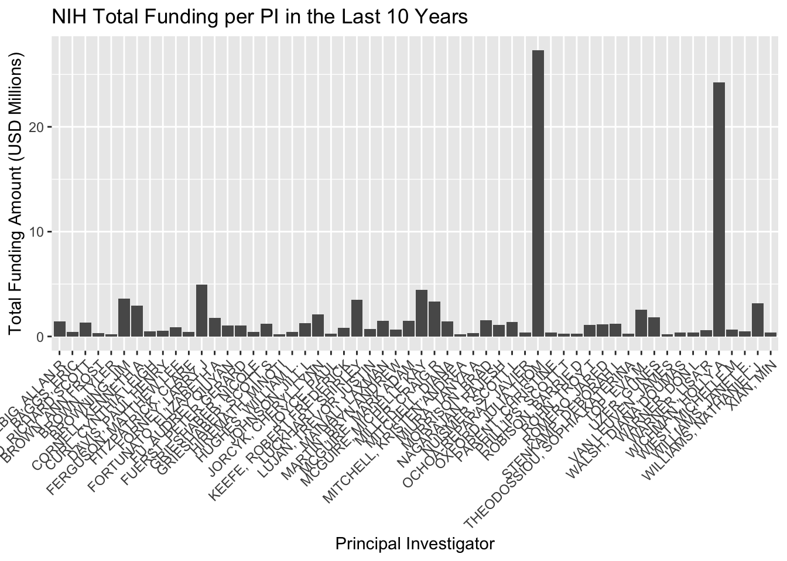
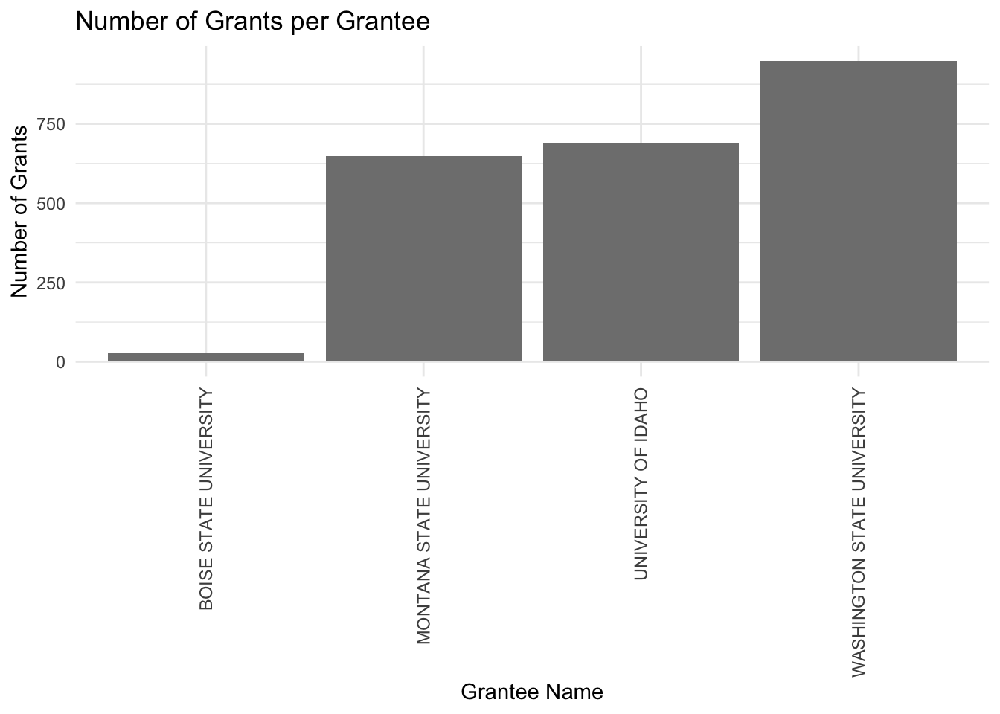

“Midterm 1, finding out how well/bad are we doing with grants”
Midtem
DataViz
Author
“Lucas”
Published
March 28, 2024
Preamble
The main goal of this midterm is to assess the University of Idaho’s performance regarding awarded grants and how it compares to other geographically close universities. The funding agencies are: The National Science Foundation, The National Institutes of Health, The Department of Energy, and The US Department of Agriculture.
We have been provided with several data sets from four different funding agencies. A quick overview of each funding agency is provided below:
1.- Department of Energy (DOE)
Code
library(tidyverse)
Warning: package 'readr' was built under R version 4.2.3
Warning: package 'dplyr' was built under R version 4.2.3
Warning: package 'stringr' was built under R version 4.2.3
── Attaching core tidyverse packages ──────────────────────── tidyverse 2.0.0 ──
✔ dplyr 1.1.4 ✔ readr 2.1.5
✔ forcats 1.0.0 ✔ stringr 1.5.1
✔ ggplot2 3.4.4 ✔ tibble 3.2.1
✔ lubridate 1.9.3 ✔ tidyr 1.3.0
✔ purrr 1.0.2
── Conflicts ────────────────────────────────────────── tidyverse_conflicts() ──
✖ dplyr::filter() masks stats::filter()
✖ dplyr::lag() masks stats::lag()
ℹ Use the conflicted package (<http://conflicted.r-lib.org/>) to force all conflicts to become errors
Code
library(readxl)library(dplyr)library(knitr)try({ DOE <-read_xlsx("DOEawards.xlsx") DOE_UI <- DOE %>% dplyr::filter(Institution =='Regents of the University of Idaho') DOE_UIFiltered <- DOE_UI %>%select(Title, Institution, PI, Status, `Program Office`, `Start Date`, `End Date`, `Amount Awarded to Date`)# Display the table knitr::kable(head(DOE_UIFiltered))}, silent =TRUE)
New names:
• `` -> `...27`
Title
Institution
PI
Status
Program Office
Start Date
End Date
Amount Awarded to Date
Nuclear Theory at the University of Idaho
Regents of the University of Idaho
Sammarruca, Francesca
Active
Office of Nuclear Physics
12/01/2021
11/30/2024
1812000
Converting methoxy groups on lignin-derived aromatics from a toxic hurdle to a useful resource: a systems-driven approach
Regents of the University of Idaho
Marx, Christopher
Active
Office of Biological & Environmental Research
09/01/2021
08/31/2024
1404162
Integrative Imaging of Plant Roots during Symbiosis with Mycorrhizal Fungi
Regents of the University of Idaho
Vasdekis, Andreas
Active
Office of Biological & Environmental Research
08/15/2021
08/14/2024
1519359
Nutrient and Fine Sediment Transport Driven by Perturbations in River Bed Movement
Regents of the University of Idaho
Yager, Elowyn
Active
Office of Biological & Environmental Research
09/01/2020
08/31/2024
603903
2.- The National Institutes of Health (NIH)
Code
library(tidyverse)library(readxl)library(dplyr)library(knitr)# Attempt to read the Excel file and process ittry({# Read the Excel file into a data frame NIH <-read_xlsx("NIH.xlsx")# Filter and select specific columns from the NSF data frame NIH_Filtered <- NIH %>%select(contact_pi_name, award_amount, budget_start)# Display the table using knitr::kable knitr::kable(head(NIH_Filtered))}, silent =TRUE)
library(tidyverse)library(readxl)library(dplyr)library(knitr)# Attempt to read the Excel file and process ittry({# Read the Excel file into a data frame NSF <-read_xlsx("NSFtoUI.xlsx")# Filter and select specific columns from the NSF data frame NSF_Filtered <- NSF %>%select(pdPIName, startDate, expDate, estimatedTotalAmt)# Display the table using knitr::kable knitr::kable(head(NSF_Filtered))}, silent =TRUE)
pdPIName
startDate
expDate
estimatedTotalAmt
Dave Lien
04/01/2024
03/31/2026
628415.00
Kristopher V Waynant
04/01/2024
03/31/2027
456051.00
Tara Hudiburg
03/01/2024
08/31/2025
1000000.00
Julie M Amador
12/01/2023
11/30/2027
1179977.00
Esteban A Hernandez Vargas
11/01/2023
10/31/2025
250000.00
Lilian Alessa
10/01/2023
09/30/2027
2435509.00
Data Dictionary table
In general all the data sets shares the same variables with different names. The most commonly used ones are summarized in the table below:
Provide a visualization that shows our active awards from each sponsor. I need to see their start date and end date, the amount of the award, and the name of the Principal Investigator. I’m really interested in seeing how far into the future our current portfolio will exist. Are there a bunch of awards about to expire? Are there a bunch that just got funded and will be active for a while? Does this vary across sponsors?
# Count the unique PIs per agencypi_count_per_agency <- funding_data %>%group_by(Agency) %>%summarise(PI_Count =n_distinct(PI))# Filter for the specific agencies if the dataset contains more agenciespi_count_per_agency <- pi_count_per_agency %>%filter(Agency %in%c("NSF", "NIH", "DOE"))# Create the bar chartggplot(pi_count_per_agency, aes(x = Agency, y = PI_Count, fill = Agency)) +geom_bar(stat ="identity", position ="dodge") +labs(title ="Total number of PIs Per Funding Agency in UofI recent history",x ="Agency",y ="Number of PIs") +theme_minimal() +scale_fill_brewer(palette ="Set2")
In general NSF seems to be the funding agency with the most PIs in UofI history. DOE is the area where UofI can grow the most, and more effort should be invested into.
Code
library(readxl)library(dplyr)library(ggplot2)library(lubridate)# Read data from an Excel fileUSDA10 <-read_xlsx("USDA10UI.xlsx")
New names:
• `` -> `...4`
• `` -> `...6`
Code
# Convert start to Date objectsUSDA10$start <-as.Date(USDA10$start, format ="%m/%d/%Y")# Handle end date: Assuming you have only the year, create a Date object for December 31st of that yearUSDA10$end <-as.Date(paste0(USDA10$end, "-12-31"), format ="%Y-%m-%d")# Create the Gantt chartggplot(USDA10, aes(y = Agency, x = start, xend = end, yend = Agency)) +geom_segment(size =10, color ="green") +# Adjust the size as neededscale_x_date(date_breaks ="1 year", date_labels ="%Y", limits =c(as.Date("2021-01-01"), as.Date("2029-01-01"))) +labs(title ="10 years of active USDA funding",x ="Timeline",y ="Agency") +theme_minimal() +theme(legend.position ="bottom")
Warning: Using `size` aesthetic for lines was deprecated in ggplot2 3.4.0.
ℹ Please use `linewidth` instead.
library(readxl)library(dplyr)library(ggplot2)# Read data from an Excel fileDOE10 <-read_xlsx("DOE10UI.xlsx")
New names:
• `` -> `...4`
• `` -> `...6`
Code
# Convert start and end to Date objects# Assuming your Excel file has columns named 'start' and 'end'DOE10$start <-as.Date(DOE10$start, format ="%m/%d/%Y")DOE10$end <-as.Date(DOE10$end, format ="%m/%d/%Y")# Create the Gantt chartggplot(DOE10, aes(y = Agency, x = start, xend = end, yend = Agency)) +geom_segment(size =20, color ="black") +# Use linewidth instead of sizescale_x_date(date_breaks ="1 year", date_labels ="%Y", limits =c(as.Date("2021-01-01"), as.Date("2029-01-01"))) +labs(title ="10 years of active DOE funding",x ="Timeline",y ="Agency") +theme_minimal() +theme(legend.position ="bottom")
library(readxl)library(dplyr)library(ggplot2)library(lubridate)library(RColorBrewer)# Aggregate data to get the total amount per PI and filter out amounts smaller than 200000total_amount_per_PI <- DOE10 %>%group_by(PI) %>%summarise(TotalAmount =sum(Amount, na.rm =TRUE)) %>%filter(TotalAmount >=200000) %>%# Filter step added herearrange(desc(TotalAmount))ggplot(total_amount_per_PI, aes(x = PI, y = TotalAmount /1e6)) +geom_bar(stat ="identity") +labs(title ="DOE Total Funding per PI in the Last 10 Years",y ="Total Funding Amount (USD Millions)",x ="Principal Investigator") +theme(axis.text.x =element_text(angle =45, hjust =1)) # Rotate X-axis labels for readability
Code
library(readxl)library(dplyr)library(ggplot2)# Read data from an Excel fileNSF10 <-read_xlsx("NSF10UI.xlsx")
New names:
• `` -> `...4`
• `` -> `...6`
Code
# Convert start and end to Date objects# Assuming your Excel file has columns named 'start' and 'end'NSF10$start <-as.Date(NSF10$start, format ="%m/%d/%Y")NSF10$end <-as.Date(NSF10$end, format ="%m/%d/%Y")# Create the Gantt chartggplot(NSF10, aes(y = Agency, x = start, xend = end, yend = Agency)) +geom_segment(size =20, color ="red") +# Use linewidth instead of sizescale_x_date(date_breaks ="1 year", date_labels ="%Y", limits =c(as.Date("2021-01-01"), as.Date("2029-01-01"))) +labs(title ="10 years of active NSF funding",x ="Timeline",y ="Agency") +theme_minimal() +theme(legend.position ="bottom")
# Aggregate data to get the total amount per PI and filter out amounts smaller than 200000total_amount_per_PI <- NSF10 %>%group_by(PI) %>%summarise(TotalAmount =sum(Amount, na.rm =TRUE)) %>%filter(TotalAmount >=200000) %>%# Filter step added herearrange(desc(TotalAmount))ggplot(total_amount_per_PI, aes(x = PI, y = TotalAmount /1e6)) +geom_bar(stat ="identity") +labs(title ="NSF Total Funding per PI in the Last 10 Years",y ="Total Funding Amount (USD Millions)",x ="Principal Investigator") +theme(axis.text.x =element_text(angle =45, hjust =1)) # Rotate X-axis labels for readability
# Assuming your dataset is named df# Clean 'Agency' data (remove leading/trailing spaces, check for case sensitivity)df$Agency <-as.character(trimws(df$Agency))# Convert 'start' and 'end' columns to Date formatdf$start <-as.Date(df$start, format ="%Y-%m-%d")df$end <-as.Date(df$end, format ="%Y-%m-%d")# Create a timeline that spans 10 years back and 10 years forward from todaytimeline_start <-Sys.Date() -years(10)timeline_end <-Sys.Date() +years(10)# Plottingggplot(df, aes(y =factor(Agency, levels =unique(Agency)), x = start, xend = end, yend =factor(Agency, levels =unique(Agency)))) +geom_segment(size =20, color ="blue") +# Adjust size and color as neededscale_x_date(limits =c(timeline_start, timeline_end), date_breaks ="1 year", date_labels ="%Y") +labs(title ="10 years of Active NIH Timeline",x ="Year",y ="Agency") +theme_minimal() +theme(axis.text.y =element_text(size =7),panel.grid.major.x =element_line(color ="grey80"),panel.grid.minor.x =element_blank(),panel.grid.major.y =element_blank(),panel.grid.minor.y =element_blank())
# Aggregate data to get the total amount per PI and filter out amounts smaller than 200000total_amount_per_PI <- NIH10 %>%group_by(PI) %>%summarise(TotalAmount =sum(Amount, na.rm =TRUE)) %>%filter(TotalAmount >=200000) %>%# Filter step added herearrange(desc(TotalAmount))ggplot(total_amount_per_PI, aes(x = PI, y = TotalAmount /1e6)) +geom_bar(stat ="identity") +labs(title ="NIH Total Funding per PI in the Last 10 Years",y ="Total Funding Amount (USD Millions)",x ="Principal Investigator") +theme(axis.text.x =element_text(angle =45, hjust =1)) # Rotate X-axis labels for readability

According to the plotted data, NSF and NIH appear to have secured grants into the furthest future, (2028-2029). DOE has the largest grow potential, since just 4 PIs have grants.
QUESTION 3:
Code
library(readxl)library(dplyr)library(ggplot2)BU <-read_xlsx("NIH.xlsx")# Use 'BU' instead of 'df' for operationsselected_universities <- BU %>%filter(organization.org_name %in%c("BOISE STATE UNIVERSITY", "UNIVERSITY OF IDAHO")) %>%group_by(organization.org_name) %>%summarise(total_award_amount =sum(award_amount, na.rm =TRUE))# Create the bar chartggplot(selected_universities, aes(x = organization.org_name, y = total_award_amount, fill = organization.org_name)) +geom_bar(stat ="identity", position ="dodge") +labs(title ="Total Award Amount by University NIH",x ="University",y ="Total Award Amount NIH") +theme_minimal() +scale_fill_manual(values =c("BOISE STATE UNIVERSITY"="blue", "UNIVERSITY OF IDAHO"="gold"))
Lets focus on USDA grants, since I’m in CALS, it makes sense to take a deeper look into USDA.
Code
# Load necessary librarieslibrary(readr)library(dplyr)library(ggplot2)library(lubridate)# Read the CSV filedata <-read_csv("USDAallU.csv")
Rows: 2314 Columns: 9
── Column specification ────────────────────────────────────────────────────────
Delimiter: ","
chr (8): Award Date, Grant Number, Proposal Number, Grant Title, State Name,...
dbl (1): Award Dollars
ℹ Use `spec()` to retrieve the full column specification for this data.
ℹ Specify the column types or set `show_col_types = FALSE` to quiet this message.
Code
# Convert 'Award Date' to Date object using correct format and filter data from 2014 to 2024data <- data %>%mutate(AwardDate =mdy(`Award Date`)) %>%filter(AwardDate >=as.Date("2014-01-01") & AwardDate <=as.Date("2024-12-31"))# Aggregate data to get the total Award Dollars for each Grantee Nametotal_award_per_grantee <- data %>%group_by(`Grantee Name`) %>%summarise(TotalAwardDollars =sum(`Award Dollars`, na.rm =TRUE)) %>%arrange(desc(TotalAwardDollars)) # Optional: arrange in descending order of total award dollars# Assuming total_award_per_grantee is already created from previous steps# Convert Grantee Name to a factor (if not already)total_award_per_grantee$`Grantee Name`<-factor(total_award_per_grantee$`Grantee Name`)# Assuming custom_colors is correctly mapped to your Grantee Namescustom_colors <-c("Boise State University"="blue", "University of Idaho"="gold", "Washington State University"="red", "University of Montana"="tan")ggplot(total_award_per_grantee, aes(x =reorder(`Grantee Name`, TotalAwardDollars), y = TotalAwardDollars /1e6, fill =`Grantee Name`)) +geom_bar(stat ="identity") +scale_fill_manual(values =c("Boise State University"="blue", "University of Idaho"="gold", "Washington State University"="red", "University of Montana"="tan")) +labs(title ="USDA Total Award Dollars per University (2014-2024)",x ="Univeristy",y ="Total Award Dollars (Millions USD)") +theme_minimal() +theme(axis.text.x =element_text(angle =90, vjust =0.5, hjust=1)) # For better readability of Grantee Names
Code
# Load necessary librarieslibrary(readr)library(dplyr)library(ggplot2)library(lubridate)# Read the datadata <-read_csv("USDAallU.csv")
Rows: 2314 Columns: 9
── Column specification ────────────────────────────────────────────────────────
Delimiter: ","
chr (8): Award Date, Grant Number, Proposal Number, Grant Title, State Name,...
dbl (1): Award Dollars
ℹ Use `spec()` to retrieve the full column specification for this data.
ℹ Specify the column types or set `show_col_types = FALSE` to quiet this message.
Code
# Prepare the data by grouping and summarisinggrants_per_grantee <- data %>%group_by(`Grantee Name`) %>%summarise(NumberOfGrants =n()) %>%arrange(desc(NumberOfGrants)) # Optional: arrange in descending order of number of grants# Define custom colors for specific Grantee Namescustom_colors <-c("Boise State University"="blue", "University of Idaho"="gold", "Washington State University"="red", "University of Montana"="tan")# Create the bar graph with custom colorsggplot(grants_per_grantee, aes(x =reorder(`Grantee Name`, NumberOfGrants), y = NumberOfGrants, fill =`Grantee Name`)) +geom_bar(stat ="identity") +scale_fill_manual(values = custom_colors) +# Apply custom colorslabs(title ="Number of Grants per Grantee",x ="Grantee Name",y ="Number of Grants") +theme_minimal() +theme(axis.text.x =element_text(angle =90, vjust =0.5, hjust =1)) # Rotate X-axis labels for better readability

Conclusions
Let me start by saying that the 80/20 rule is completely accurate. I probably spent more than 80% of the time cleaning, merging, and generally preparing the appropriate data sets to produce these few data visualizations. There’s no convention among funding agencies on how they report their data; this would make things way easier for universities and institutions to have an idea of how they are doing in comparison to the rest.
DOE shows the largest growing potential, with just 4 PIs; there’s a big opportunity to grow.
UofI has a solid funding history with NIH with a few anchor PIs that got large total amounts.
In general, UofI is doing well, especially with USDA. Considering its size (around 12,000 students), UofI is comparable to Montana State (10,000 students), and the data shows it; numbers are similar for USDA. WSU (23,000 students) is significantly larger and it makes sense that it got more USDA projects. Boise State (23,000 students) is not an agricultural sciences-based university, but it is as large as WSU, so if they were to get into agricultural sciences, they would certainly be a threat to UofI’s USDA funding.
What I learned is that these types of analyses are way more complicated than they look. Choosing the right variables and presenting the data in a meaningful way is critical to arriving at the right conclusions. Also, since there’s a significant amount of data wrangling involved, the chances of making a mistake can’t be overlooked, so a quality assessment is mandatory to double-check for any possible mistakes.
Source Code
---title: “BCB 520 - Midterm Portfolio Post”subtitle: “Midterm Assginments”author: “Lucas”date: March 28, 2024 image: "Grants.png" categories: [Midtem, DataViz]code-fold: truecode-tools: truedescription: “Midterm 1, finding out how well/bad are we doing with grants”---## Preamble**The main goal of this midterm is to assess the University of Idaho's performance regarding awarded grants and how it compares to other geographically close universities. The funding agencies are: The National Science Foundation, The National Institutes of Health, The Department of Energy, and The US Department of Agriculture.****We have been provided with several data sets from four different funding agencies. A quick overview of each funding agency is provided below:****1.- Department of Energy (DOE)**```{r}library(tidyverse)library(readxl)library(dplyr)library(knitr)try({ DOE <-read_xlsx("DOEawards.xlsx") DOE_UI <- DOE %>% dplyr::filter(Institution =='Regents of the University of Idaho') DOE_UIFiltered <- DOE_UI %>%select(Title, Institution, PI, Status, `Program Office`, `Start Date`, `End Date`, `Amount Awarded to Date`)# Display the table knitr::kable(head(DOE_UIFiltered))}, silent =TRUE)```**2.- The National Institutes of Health (NIH)**```{r}library(tidyverse)library(readxl)library(dplyr)library(knitr)# Attempt to read the Excel file and process ittry({# Read the Excel file into a data frame NIH <-read_xlsx("NIH.xlsx")# Filter and select specific columns from the NSF data frame NIH_Filtered <- NIH %>%select(contact_pi_name, award_amount, budget_start)# Display the table using knitr::kable knitr::kable(head(NIH_Filtered))}, silent =TRUE)```**3.- Department of Agriculture (NIFA)**```{r}library(tidyverse)library(readxl)library(knitr)USDA_UI <-read.csv("USDAtoUI.csv")knitr::kable(head(USDA_UI))```**4.- The National Science Foundation (NSF)**```{r}library(tidyverse)library(readxl)library(dplyr)library(knitr)# Attempt to read the Excel file and process ittry({# Read the Excel file into a data frame NSF <-read_xlsx("NSFtoUI.xlsx")# Filter and select specific columns from the NSF data frame NSF_Filtered <- NSF %>%select(pdPIName, startDate, expDate, estimatedTotalAmt)# Display the table using knitr::kable knitr::kable(head(NSF_Filtered))}, silent =TRUE)```## Data Dictionary tableIn general all the data sets shares the same variables with different names. The most commonly used ones are summarized in the table below:```{r}library(tidyverse)library(readxl)library(knitr)datatable <-read_xlsx("DataDictionary.xlsx")knitr::kable(head(datatable))```## QUESTION 1:Provide a visualization that shows our active awards from each sponsor. I need to see their start date and end date, the amount of the award, and the name of the Principal Investigator. I’m really interested in seeing how far into the future our current portfolio will exist. Are there a bunch of awards about to expire? Are there a bunch that just got funded and will be active for a while? Does this vary across sponsors?**Lets take a look at historical data:**```{r}library(readxl)library(dplyr)library(ggplot2)library(readxl)library(dplyr)library(ggplot2)funding_data <-read_xlsx("UIawards2.xlsx")# Count the unique PIs per agencypi_count_per_agency <- funding_data %>%group_by(Agency) %>%summarise(PI_Count =n_distinct(PI))# Filter for the specific agencies if the dataset contains more agenciespi_count_per_agency <- pi_count_per_agency %>%filter(Agency %in%c("NSF", "NIH", "DOE"))# Create the bar chartggplot(pi_count_per_agency, aes(x = Agency, y = PI_Count, fill = Agency)) +geom_bar(stat ="identity", position ="dodge") +labs(title ="Total number of PIs Per Funding Agency in UofI recent history",x ="Agency",y ="Number of PIs") +theme_minimal() +scale_fill_brewer(palette ="Set2")```**In general NSF seems to be the funding agency with the most PIs in UofI history. DOE is the area where UofI can grow the most, and more effort should be invested into.**``` ``````{r}library(readxl)library(dplyr)library(ggplot2)library(lubridate)# Read data from an Excel fileUSDA10 <-read_xlsx("USDA10UI.xlsx")# Convert start to Date objectsUSDA10$start <-as.Date(USDA10$start, format ="%m/%d/%Y")# Handle end date: Assuming you have only the year, create a Date object for December 31st of that yearUSDA10$end <-as.Date(paste0(USDA10$end, "-12-31"), format ="%Y-%m-%d")# Create the Gantt chartggplot(USDA10, aes(y = Agency, x = start, xend = end, yend = Agency)) +geom_segment(size =10, color ="green") +# Adjust the size as neededscale_x_date(date_breaks ="1 year", date_labels ="%Y", limits =c(as.Date("2021-01-01"), as.Date("2029-01-01"))) +labs(title ="10 years of active USDA funding",x ="Timeline",y ="Agency") +theme_minimal() +theme(legend.position ="bottom")``````{r}library(readxl)library(dplyr)library(ggplot2)# Read data from an Excel fileDOE10 <-read_xlsx("DOE10UI.xlsx")# Convert start and end to Date objects# Assuming your Excel file has columns named 'start' and 'end'DOE10$start <-as.Date(DOE10$start, format ="%m/%d/%Y")DOE10$end <-as.Date(DOE10$end, format ="%m/%d/%Y")# Create the Gantt chartggplot(DOE10, aes(y = Agency, x = start, xend = end, yend = Agency)) +geom_segment(size =20, color ="black") +# Use linewidth instead of sizescale_x_date(date_breaks ="1 year", date_labels ="%Y", limits =c(as.Date("2021-01-01"), as.Date("2029-01-01"))) +labs(title ="10 years of active DOE funding",x ="Timeline",y ="Agency") +theme_minimal() +theme(legend.position ="bottom")library(readxl)library(dplyr)library(ggplot2)library(lubridate)library(RColorBrewer)# Aggregate data to get the total amount per PI and filter out amounts smaller than 200000total_amount_per_PI <- DOE10 %>%group_by(PI) %>%summarise(TotalAmount =sum(Amount, na.rm =TRUE)) %>%filter(TotalAmount >=200000) %>%# Filter step added herearrange(desc(TotalAmount))ggplot(total_amount_per_PI, aes(x = PI, y = TotalAmount /1e6)) +geom_bar(stat ="identity") +labs(title ="DOE Total Funding per PI in the Last 10 Years",y ="Total Funding Amount (USD Millions)",x ="Principal Investigator") +theme(axis.text.x =element_text(angle =45, hjust =1)) # Rotate X-axis labels for readability``````{r}library(readxl)library(dplyr)library(ggplot2)# Read data from an Excel fileNSF10 <-read_xlsx("NSF10UI.xlsx")# Convert start and end to Date objects# Assuming your Excel file has columns named 'start' and 'end'NSF10$start <-as.Date(NSF10$start, format ="%m/%d/%Y")NSF10$end <-as.Date(NSF10$end, format ="%m/%d/%Y")# Create the Gantt chartggplot(NSF10, aes(y = Agency, x = start, xend = end, yend = Agency)) +geom_segment(size =20, color ="red") +# Use linewidth instead of sizescale_x_date(date_breaks ="1 year", date_labels ="%Y", limits =c(as.Date("2021-01-01"), as.Date("2029-01-01"))) +labs(title ="10 years of active NSF funding",x ="Timeline",y ="Agency") +theme_minimal() +theme(legend.position ="bottom")library(readxl)library(dplyr)library(ggplot2)library(lubridate)library(RColorBrewer)NSF10 <-read_xlsx("NSF10UI.xlsx")# Aggregate data to get the total amount per PI and filter out amounts smaller than 200000total_amount_per_PI <- NSF10 %>%group_by(PI) %>%summarise(TotalAmount =sum(Amount, na.rm =TRUE)) %>%filter(TotalAmount >=200000) %>%# Filter step added herearrange(desc(TotalAmount))ggplot(total_amount_per_PI, aes(x = PI, y = TotalAmount /1e6)) +geom_bar(stat ="identity") +labs(title ="NSF Total Funding per PI in the Last 10 Years",y ="Total Funding Amount (USD Millions)",x ="Principal Investigator") +theme(axis.text.x =element_text(angle =45, hjust =1)) # Rotate X-axis labels for readability``````{r}library(ggplot2)library(dplyr)library(lubridate)df <-read_xlsx("UIawards.xlsx")# Assuming your dataset is named df# Clean 'Agency' data (remove leading/trailing spaces, check for case sensitivity)df$Agency <-as.character(trimws(df$Agency))# Convert 'start' and 'end' columns to Date formatdf$start <-as.Date(df$start, format ="%Y-%m-%d")df$end <-as.Date(df$end, format ="%Y-%m-%d")# Create a timeline that spans 10 years back and 10 years forward from todaytimeline_start <-Sys.Date() -years(10)timeline_end <-Sys.Date() +years(10)# Plottingggplot(df, aes(y =factor(Agency, levels =unique(Agency)), x = start, xend = end, yend =factor(Agency, levels =unique(Agency)))) +geom_segment(size =20, color ="blue") +# Adjust size and color as neededscale_x_date(limits =c(timeline_start, timeline_end), date_breaks ="1 year", date_labels ="%Y") +labs(title ="10 years of Active NIH Timeline",x ="Year",y ="Agency") +theme_minimal() +theme(axis.text.y =element_text(size =7),panel.grid.major.x =element_line(color ="grey80"),panel.grid.minor.x =element_blank(),panel.grid.major.y =element_blank(),panel.grid.minor.y =element_blank())library(readxl)library(dplyr)library(ggplot2)library(lubridate)library(RColorBrewer)NIH10 <-read_xlsx("NIH10UI.xlsx")# Aggregate data to get the total amount per PI and filter out amounts smaller than 200000total_amount_per_PI <- NIH10 %>%group_by(PI) %>%summarise(TotalAmount =sum(Amount, na.rm =TRUE)) %>%filter(TotalAmount >=200000) %>%# Filter step added herearrange(desc(TotalAmount))ggplot(total_amount_per_PI, aes(x = PI, y = TotalAmount /1e6)) +geom_bar(stat ="identity") +labs(title ="NIH Total Funding per PI in the Last 10 Years",y ="Total Funding Amount (USD Millions)",x ="Principal Investigator") +theme(axis.text.x =element_text(angle =45, hjust =1)) # Rotate X-axis labels for readability```**According to the plotted data, NSF and NIH appear to have secured grants into the furthest future, (2028-2029). DOE has the largest grow potential, since just 4 PIs have grants.**## QUESTION 3:```{r}library(readxl)library(dplyr)library(ggplot2)BU <-read_xlsx("NIH.xlsx")# Use 'BU' instead of 'df' for operationsselected_universities <- BU %>%filter(organization.org_name %in%c("BOISE STATE UNIVERSITY", "UNIVERSITY OF IDAHO")) %>%group_by(organization.org_name) %>%summarise(total_award_amount =sum(award_amount, na.rm =TRUE))# Create the bar chartggplot(selected_universities, aes(x = organization.org_name, y = total_award_amount, fill = organization.org_name)) +geom_bar(stat ="identity", position ="dodge") +labs(title ="Total Award Amount by University NIH",x ="University",y ="Total Award Amount NIH") +theme_minimal() +scale_fill_manual(values =c("BOISE STATE UNIVERSITY"="blue", "UNIVERSITY OF IDAHO"="gold"))```**Lets focus on USDA grants, since I'm in CALS, it makes sense to take a deeper look into USDA.**```{r}# Load necessary librarieslibrary(readr)library(dplyr)library(ggplot2)library(lubridate)# Read the CSV filedata <-read_csv("USDAallU.csv")# Convert 'Award Date' to Date object using correct format and filter data from 2014 to 2024data <- data %>%mutate(AwardDate =mdy(`Award Date`)) %>%filter(AwardDate >=as.Date("2014-01-01") & AwardDate <=as.Date("2024-12-31"))# Aggregate data to get the total Award Dollars for each Grantee Nametotal_award_per_grantee <- data %>%group_by(`Grantee Name`) %>%summarise(TotalAwardDollars =sum(`Award Dollars`, na.rm =TRUE)) %>%arrange(desc(TotalAwardDollars)) # Optional: arrange in descending order of total award dollars# Assuming total_award_per_grantee is already created from previous steps# Convert Grantee Name to a factor (if not already)total_award_per_grantee$`Grantee Name`<-factor(total_award_per_grantee$`Grantee Name`)# Assuming custom_colors is correctly mapped to your Grantee Namescustom_colors <-c("Boise State University"="blue", "University of Idaho"="gold", "Washington State University"="red", "University of Montana"="tan")ggplot(total_award_per_grantee, aes(x =reorder(`Grantee Name`, TotalAwardDollars), y = TotalAwardDollars /1e6, fill =`Grantee Name`)) +geom_bar(stat ="identity") +scale_fill_manual(values =c("Boise State University"="blue", "University of Idaho"="gold", "Washington State University"="red", "University of Montana"="tan")) +labs(title ="USDA Total Award Dollars per University (2014-2024)",x ="Univeristy",y ="Total Award Dollars (Millions USD)") +theme_minimal() +theme(axis.text.x =element_text(angle =90, vjust =0.5, hjust=1)) # For better readability of Grantee Names``````{r}# Load necessary librarieslibrary(readr)library(dplyr)library(ggplot2)library(lubridate)# Read the datadata <-read_csv("USDAallU.csv")# Prepare the data by grouping and summarisinggrants_per_grantee <- data %>%group_by(`Grantee Name`) %>%summarise(NumberOfGrants =n()) %>%arrange(desc(NumberOfGrants)) # Optional: arrange in descending order of number of grants# Define custom colors for specific Grantee Namescustom_colors <-c("Boise State University"="blue", "University of Idaho"="gold", "Washington State University"="red", "University of Montana"="tan")# Create the bar graph with custom colorsggplot(grants_per_grantee, aes(x =reorder(`Grantee Name`, NumberOfGrants), y = NumberOfGrants, fill =`Grantee Name`)) +geom_bar(stat ="identity") +scale_fill_manual(values = custom_colors) +# Apply custom colorslabs(title ="Number of Grants per Grantee",x ="Grantee Name",y ="Number of Grants") +theme_minimal() +theme(axis.text.x =element_text(angle =90, vjust =0.5, hjust =1)) # Rotate X-axis labels for better readability```## Conclusions**Let me start by saying that the 80/20 rule is completely accurate. I probably spent more than 80% of the time cleaning, merging, and generally preparing the appropriate data sets to produce these few data visualizations. There’s no convention among funding agencies on how they report their data; this would make things way easier for universities and institutions to have an idea of how they are doing in comparison to the rest.****DOE shows the largest growing potential, with just 4 PIs; there’s a big opportunity to grow.****UofI has a solid funding history with NIH with a few anchor PIs that got large total amounts.****In general, UofI is doing well, especially with USDA. Considering its size (around 12,000 students), UofI is comparable to Montana State (10,000 students), and the data shows it; numbers are similar for USDA. WSU (23,000 students) is significantly larger and it makes sense that it got more USDA projects. Boise State (23,000 students) is not an agricultural sciences-based university, but it is as large as WSU, so if they were to get into agricultural sciences, they would certainly be a threat to UofI’s USDA funding.****What I learned is that these types of analyses are way more complicated than they look. Choosing the right variables and presenting the data in a meaningful way is critical to arriving at the right conclusions. Also, since there’s a significant amount of data wrangling involved, the chances of making a mistake can’t be overlooked, so a quality assessment is mandatory to double-check for any possible mistakes.**